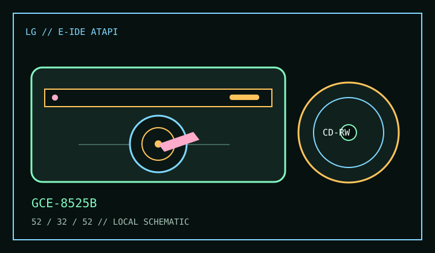

[ CD-R AND CD-RW DRIVES // IDENTIFIED MODEL ]
LG GCE-8525B
Internal E-IDE/ATAPI CD-R/RW recorder rated for up to 52× CD-R writing, 32× CD-RW rewriting and 52× CD reading.

IDENTIFICATION: Confirm the GCE-8525B label and OEM suffix; related LG GCE models can have different firmware and media ratings.
Documented specifications
| Exact model | LG GCE-8525B |
|---|---|
| CD-R write | Up to 52× |
| CD-RW rewrite | Up to 32× |
| CD read | Up to 52× |
| Supported media | Writes CD-R and CD-RW; reads CD-ROM, CD-ROM XA, CD-DA, CD-I FMV, Photo CD, Video CD, CD-Plus/CD-Extra and supported recordable discs. Disc modes remain software- and media-dependent. |
| Interface / bay | Internal E-IDE/ATAPI, half-height 5.25-inch bay; manufacturer literature permits horizontal or vertical mounting. |
| Host compatibility | Manufacturer documentation lists DOS 3.1+ and Windows 98/ME/NT 4.0/2000/XP era environments. Use an IDE/ATAPI host and period-compatible recording software; current operating systems do not imply support for legacy authoring utilities. |
| Firmware / jumper | Use firmware matching the exact GCE-8525B/OEM identity and installed revision. Configure MA/SL/CS using the drive label/manual and match the host IDE channel; do not infer pin positions from another GCE model. |
Compatibility and preservation
- Media speed certification and recorder/authoring software determine whether advertised maxima are available.
- Keep the exact OEM suffix, firmware string, IDE controller, jumper mode, media code and verification results with any archival recording.
- Maintain checksummed copies of disc images and avoid undocumented firmware cross-flashing or media repair.
Manufacturer and manual references
- LG GCE-8525B manufacturer specification sheetLG model specification sheet preserved in the Retro Web document archive.
- LG GCE-8525B CD/CDR drive manual and specificationsModel-specific setup and specification reference; verify the label and manual revision.